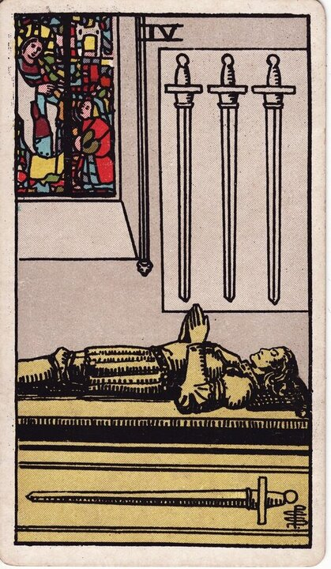

Minor Arcana · Suit of Swords
Four of Swords Tarot Card Meaning
The Four of Swords is the necessary pause - rest, recovery, a quiet room after the storm. Want to know what it means in your spread? Every reader on our line is hand-vetted - connect in under 60 seconds, $1 for your first minute, hang up anytime.
- Hand-vetted readers
- Available 24/7
- Hang up anytime

Four of Swords - What It Shows
A knight lies still on a tomb as if in repose, hands in prayer, three swords mounted on the wall above and one beneath him. A stained-glass window glows softly. It isn't death - it's deliberate stillness, sanctuary, recovery. After the wound of the Three, the Four is the infirmary: the mind set down its weapons to heal before it can think clearly or fight again.
Four of Swords Upright Meaning
Upright, the Four of Swords is rest, recuperation, and mental retreat. A pause after stress, time out to recover, meditation, or stepping back before re-engaging. It's not avoidance - it's the recovery the situation requires. Its core message: stop and restore before the next round.
Four of Swords Reversed Meaning
Reversed, the rest is disrupted or refused. Restlessness, burnout, being forced to stop, re-entering before you've healed, or guilt about resting. It can also mean the recovery period is ending and it's time to return.
Four of Swords in Love & Relationships
In love, the Four of Swords is a pause or breathing space - a relationship on hold, time apart to recover, or stepping back instead of forcing a decision while raw. Example: a caller pushing for answers right after a painful argument drew this card; the read advised a deliberate pause - clarity wasn't available mid-stress, and forcing it would do more harm than the wait.
Four of Swords in Career & Money
For work it's a recovery period, a sabbatical, recharging after a demanding stretch, or stepping back to plan. Example: someone running on empty and pushing harder pulled this card; the message was that rest is the productive move here - burning the last reserves would cost more than the pause.
Four of Swords as Advice
As advice: rest before you decide or act. Take the pause deliberately, protect the recovery, and re-engage from a restored mind rather than a depleted one.
Four of Swords Reversed in Love & Career
Reversed, this card deserves a closer look by area. In love, it's either a pause ending - ready to re-engage and reconnect - or being unable to rest from a relationship's stress, stuck in rumination, or rushing back together before healing. In career, reversed it's burnout from refusing to stop, being forced into a break, or returning too soon and crashing again. The reversed Four's question is whether you're honouring the rest you need or fighting it. A live reader can help you tell genuine readiness from impatience.
What People Ask About the Four of Swords
The questions readers hear most about this card:
"Does it mean a break or time apart?"
Often - a pause, breathing space, or recovery period.
"Four of Swords as feelings?"
Withdrawn to recover - "I need space," not necessarily "I'm done."
"Is the relationship over?"
Usually no - it's a pause, not an ending; context refines it.
"When do I act?"
After the rest - the card explicitly counsels waiting first.
Four of Swords - Yes or No?
A "not yet - rest first" rather than a clear yes or no. Reversed can mean the pause is ending and a yes/no can form.
Four of Swords Timing in a Reading
Timing is the least precise thing tarot does, so treat this as a lean, not a date. The Four of Swords describes a recovery period - readers usually frame it as a pause lasting until you're restored, often weeks, rather than a fixed date. Reversed signals the rest is ending. A live reader reads timing from the full spread and your question far more reliably than the card alone.
Four of Swords Card Combinations
Context changes everything - a few pairings readers see often:
Four of Swords + Three of Swords
Recovery and rest right after heartbreak - healing time.
Four of Swords + The Hermit
Deliberate solitude for restoration and reflection.
Four of Swords + Eight of Wands
A pause ending - rest, then rapid movement returns.
Four of Swords in a Tarot Reading
A meanings page is the map; a live reading is the territory. The Four of Swords shifts with its position and the cards around it - which is what a hand-vetted reader interprets for your question. See the full Suit of Swords, all 56 cards on the Minor Arcana hub, or start a phone tarot reading.
← Three of Swords · Next: Five of Swords →
What Does the Four of Swords Mean for You?
A meanings list is the map; a live reading is the territory. We'll connect you with the right hand-vetted tarot reader in under 60 seconds. $1/min first call · 15 minutes for $10 · hang up anytime · 100% satisfaction promise.
Call (888) 920-6662 NowFour of Swords - Frequently Asked Questions
What does the Four of Swords mean?
Rest, recovery, and mental retreat - a necessary pause before re-engaging.
What does it mean reversed?
Restlessness, burnout, forced rest, or re-entering too soon.
What does the Four of Swords mean in love?
A pause or breathing space - time apart to recover rather than forcing things.
Is it a yes or no card?
"Not yet - rest first" more than a clear yes or no.
How much does a reading cost?
First-time callers pay $1/min, or 15 minutes for $10, and you can hang up anytime.
Get Your Tarot Reading Now
Connected to a hand-vetted reader in under 60 seconds, the cards pulled on your real question, and you hang up with clarity.
Call (888) 920-6662